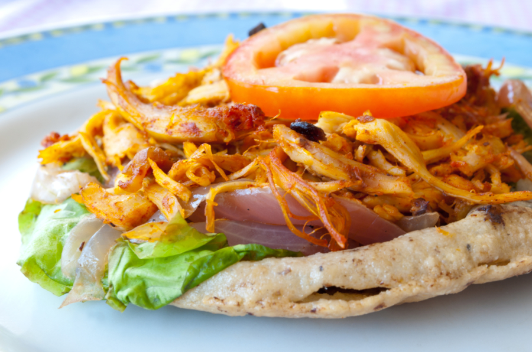

Panuchos

Traditional Yucatecan Panuchos
Panuchos are a delicious treat that come from the Yucatán region of Mexico. They're essentially a fried tortilla that's cut open and filled with refried beans, and then finished off with a variety of toppings. It's basically a stuffed tostada, and if that sounds delicious, it's because it is!
While the base of the panucho is always the same (fried, stuffed tortillas), the topping is up to you. For this recipe I went with a simple shredded pibil-style chicken, lettuce, tomato, avocado and pickled onions. But you can top them with the ingredients of your choice. Some people make panuchos with ground beef, eggs, or vegetables of you want to try a vegetarian or vegan version. As with tacos, you can get creative and make your own recipe. They're also a great way to repurpose your leftovers.
Ingredients
- 2 CUPS MASA HARINA (CORN FLOUR)
- 1/2 TEASPOON SALT.
- 1 1/4 CUPS WATER
- 1 1/2 CUPS REFRIED BEANS
- 1 1/2 CUPS VEGETABLE OIL
Directions
- Combine the masa harina, water, and salt in a mixing bowl. Stir with a wooden spoon until smooth. The dough should be a little sticky but not wet. (Test the consistency by rolling some dough into a golf ball shape and flatten it; if the edges crack easily, it's because the dough is too dry. Add about a tablespoon of water at a time until you reach the perfect consistency.)
- Form the dough into 8 equal balls. Place a plastic bag over your tortilla press, add one of the dough balls and gently press down to form the panucho. It should be about 4 to 5 inches in diameter. If you don't have a tortilla press, you can use the smooth bottom of a heavy pan.
- Heat a griddle or skillet over medium heat until hot. Add one or two tortillas and cook for 30 seconds to 1 minute on each side. When you flip each tortilla, it should puff up in the center. Transfer tortillas to a plate.
- Us a sharp knife to cut a hole along one edge of each tortilla to form a pocket. Open up the pocket, squeeze gently to hold it open, and fill with a spoonful of refried beans. Using your fingers, press down to make sure the beans are evenly spread.
- Add the panuchos to the heated oil and fry for 2-3 minutes on each side until they are golden. Place them on a plate lined with paper towels to remove excess oil.
- To serve, top with cooked shredded chicken, lettuce, pickled onion, tomato and avocado. Serve with salsa verde on the side.